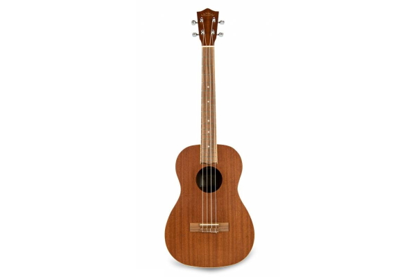

укулеле баритон

Это весьма специфический инструмент, который можно встретить не в каждом магазине. Он гораздо больше своих собратьев и имеет другой, более низкий строй. Однако, помимо игры в оркестре или другом музыкальном бэнде, укулеле баритон могут быть интересны гитаристам, любящим эксперименты в звучании. Строй баритон укулеле соответствует первым четырем струнам гитары, а значит любой гитарист с легкостью приступит к игре, не разучивая новую аппликатуру.